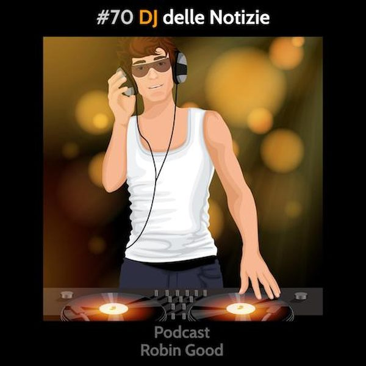

Diventare Punti di Riferimento: Il DJ delle notizie

Per diventare punti di riferimento per gli altri è indispensabile dimostrare di essere utili.
E poiché viviamo in un'epoca caratterizzata dalla straordinaria abbondanza di informazioni e notizie, una delle cose più utili che è possibile fare è quella di risparmiare del tempo agli altri.
Come?
Occupandoci di selezionare e raccogliere per loro, sistematicamente, le notizie e/o le risorse più utili, su un tema molto specifico.
Eppure, sono ancora in pochissimi ad aver veramente compreso questo concetto così semplice.
Il 90% delle aziende e dei consulenti continua a preoccuparsi di scrivere e creare nuovi contenuti, spesso rigurgitando idee e concetti già affrontati precedentemente, senza portare nulla di realmente nuovo e utile sul tavolo.
Non che ci sia qualcosa di male con la creazione di nuovi contenuti e con il re-iterare concetti ed idee importanti. Lo faccio sempre anche io.
Il discorso è un altro.
Se voglio distinguermi dagli altri e desidero mostrare la mia autorevolezza in un settore, una delle strade più efficaci e meno battute e quella di "fare da punto di riferimento" per tutte le notizie di un settore ben specifico.
Monitorare quotidianamente un problema, un interesse, un'esigenza, anche e non solo da fonti Italiane e riportare poi - aggiungendo valore - ciò che più di significativo e rilevante emerge là fuori.
Come si aggiunge il valore?
Contestualizzando le notizie e le risorse interessanti che condividi per il tuo pubblico, sintetizzando la "ciccia" che contengono e spiegando chiaramente perché val la pena approfondirle.
Questo è il disc-jockey delle notizie, il "newsmaster" in grado di dimostrare la sua autorevolezza attraverso la selezione, il commento e la condivisone guidata di ciò che scopre.
Strumenti utili:
Per scoprire e selezionare nuovi contenuti interessanti da contestualizzare e condividere
http://Feedly.com - tieni sott'occhio tutti i siti e le fonti rilevanti da un'unica dashboard
http://Flipboard.com - scopri contenuti rilevanti selezionati da altri esperti di settore
http://Scoop.it - scopri, cura e condividi sui tuoi social / o sito web il tuo newsradar
https://medium.com/content-curation-official-guide/
-------------
Info Utili
• Puoi ascoltare questo podcast su Spotify, iTunes, Spreaker e su altre piattaforme:
https://gopod.me/RobinGood
• Fornisci feedback, critiche, commenti, suggerimenti, idee e domande a questo podcast, usando Telegram e unendoti al gruppo @RobinGoodPodcastFeedback.
Sul gruppo Telegram puoi commentare la puntata con note testuali o vocali. Puoi suggerire tematiche per le prossime puntate e sottoporre domande specifiche che vorresti fossero trattate nelle puntate future.
Esprimi la tua soddisfazione e incoraggiamento diventando anche tu un sostenitore attivo di questo podcast qui: www.patreon.com/Robin_Good
Altri indirizzi utili:
• Seguimi e rimani aggiornato qui:
https://facebook.com/RobinGoodItalia/
• Iscriviti alla newsletter settimanale
dove leggere le mie storie e scoprire tre
nuovi tool utili per chi comunica online:
http://robingood.it/toptools-newsletter
Per qualsiasi altra richiesta:
Ludovica.Scarfiotti@robingood.it
Musica: "Something Between Us" by Khudosoul feat. Birocratic - disponibile su Bandcamp: https://chillhop.bandcamp.com/track/something-between-us-ft-birocratic